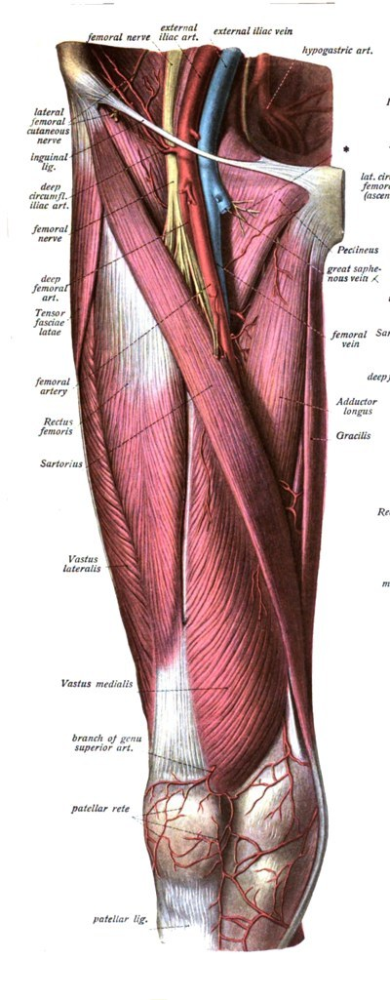

スクワットSquat
股関節・膝関節・足関節を同時に屈曲・伸展させて、体を下ろして上げる多関節の閉鎖運動連鎖（CKC）動作。椅子からの立ち上がりと同じ運動パターンであり、下肢の筋力・筋量を高める代表的なレジスタンストレーニング種目でもあります。
1. 分類
| 負荷のかけ方 | 自重／ゴブレット（胸の前でダンベル）／ハイバー・バックスクワット（僧帽筋上部にバー）／ローバー・バックスクワット（肩甲棘の高さ、三角筋後部にバー）／フロントスクワット（鎖骨・三角筋前部にバー）／オーバーヘッド |
|---|---|
| 足の置き方 | 両脚（バイラテラル）／スプリットスクワット／ブルガリアンスクワット（後ろ足を台に）／片脚スクワット（ピストル） |
| 深さ | クォーター（膝屈曲約45°）／ハーフ（約90°）／パラレル（大腿上面が床と平行）／フル（ディープ、パラレルより深い） 角度の定義は研究・団体で異なります。論文を読むときは「膝の角度」か「股関節の高さ」か、どちらで定義しているかを確認してください。 |
2. 動作の局面
| ① 開始姿勢 | 足裏全体で立ち、重心を足の中央の上に置く。体幹を固め、呼吸を整える。 |
|---|---|
| ② 下降 | 股関節・膝・足首を同時に曲げる。下肢の伸筋群がエキセントリックに働いてブレーキをかける。 |
| ③ ボトム（切り返し） | 最も深い位置。伸ばされた筋と腱の弾性、伸張反射が切り返しを助ける（伸張–短縮サイクル）。ここで止めて一時停止する方法（ポーズスクワット）は、この助けを減らし難しくなる。 |
| ④ 上昇 | 伸筋群がコンセントリックに働く。上昇の途中にスティッキングポイント（速度が最も落ち、挙上に失敗しやすい位置）があり、高重量で顕著。 |
3. 関節運動
| 関節 | 下降時の運動 → 上昇時はその逆 |
|---|---|
| 股関節 | 屈曲（深さに応じて大きくなる）。わずかに外転・外旋を伴うことが多い |
| 膝関節 | 屈曲。フルスクワットでは大腿と下腿が接するほど深くなる |
| 足関節 | 背屈（すねが前に倒れる）。背屈が制限されると、かかとが浮く・体幹がより前に倒れる |
| 脊柱 | 理想的には大きな動きを抑えて保持。深い位置で骨盤が後傾し腰椎が丸まることがある（いわゆるbutt wink） |
各関節の到達角度は、深さ・バーの位置・体格（大腿と下腿の長さの比）・足関節の柔軟性で大きく変わります。
4. 主働筋と協働筋

図：Sobotta (1909) Fig.573（パブリックドメイン, Wikimedia Commons "Sobo 1909 573-574.png"）
| 膝の伸展 | 大腿四頭筋。広筋群（単関節筋）が主に働く。大腿直筋は股関節もまたぐ二関節筋のため、スクワットでの長さの変化は小さい |
|---|---|
| 股関節の伸展 | 大殿筋、大内転筋、ハムストリングス |
| 足関節の制御 | ヒラメ筋・腓腹筋（下降時に背屈を制御） |
| 体幹の保持 | 脊柱起立筋、腹筋群（腹直筋・腹斜筋・腹横筋）、横隔膜・骨盤底筋 |
| 膝の向きの制御 | 中殿筋・深層外旋筋など（膝が内側へ入るのを抑える） |
ハムストリングスは股関節伸展と膝屈曲を同時に担う二関節筋で、スクワットでは筋の長さがあまり変わりません。10週間のトレーニング研究でも、ハムストリングスの筋量は増えませんでした（Kubo 2019）。
5. 力学
関節を回す力（関節モーメント）は力 × モーメントアームで決まります。体と重りを合わせた重心は、バランスを保つために足の中央付近の上に来ます。このため、重りの位置や体幹の角度を変えると、股関節と膝の負担の配分が変わります。
| 膝が前に出ないように制限 | 膝の負担は減るが、股関節と腰の負担が増える（Fry 2003）。負担は消えず、配分が変わるだけ |
|---|---|
| 膝にかかる力（Escamilla 2001のレビュー） | 脛骨大腿関節の圧縮力・せん断力、膝蓋大腿関節の圧縮力は、膝が深く曲がるほど大きくなり、最も深い位置付近で最大。前十字靱帯にかかる前方せん断力は膝屈曲0〜60°で小さく、全体を通して後方せん断力（後十字靱帯が制御）が主。健康な膝ではパラレルスクワットが傷害を起こすことは示されていない |
| リハビリへの示唆 | 膝の力が小さい屈曲0〜50°の範囲は、多くの膝のリハビリ患者に適しうる（Escamilla 2001） |
6. 深さ
| 筋肥大への影響 | フルスクワット（膝屈曲約140°）とハーフスクワット（約90°）を10週間比べた研究：大殿筋（6.7% vs 2.2%）と内転筋（6.2% vs 2.7%）の筋量の増加はフルが大きく、大腿四頭筋（4.9% vs 4.6%）は同程度（Kubo 2019：未経験の男性17名） |
|---|---|
| 膝・腰への負担 | 深くしゃがむと膝に悪いという考えに対し、深い屈曲では太ももとふくらはぎの接触や膝蓋骨の接触面積の増加で負担が分散されるため、深いスクワットが軟骨の変性などのリスクを高めるという懸念は根拠に乏しい、とするレビューがある（Hartmann 2013）。同じ刺激を得るためにハーフやクォーターではより重い重量が必要になり、脊柱への負担が増えうるとも指摘されている |
| 実務の判断 | 深さは目的・可動域・痛み・既往で決める。腰が丸まらず、痛みなく制御できる深さを基本とする |
7. バーの位置による違い
| ハイバー | 体幹がより起き、膝の屈曲が大きく、大腿四頭筋の活動が大きい |
|---|---|
| ローバー | 股関節の屈曲が大きく体幹が前傾し、脊柱起立筋・内転筋・殿筋の活動が大きい。床反力の違いは小さい（Glassbrook 2017のレビュー） |
| フロント | 体幹がさらに起きる。バックスクワットより膝の圧縮力・膝伸展モーメントが小さく、脊柱起立筋の活動は大きかった（Gullett 2009、15名） |
8. 足幅とつま先の向き
足幅を広げると股関節の外転・外旋が大きくなり、内転筋の関与が増えると説明されます。つま先の向きは股関節の形（臼蓋や大腿骨頸部の向き）に個人差があるため、一律の「正しい角度」はありません。膝とつま先の向きをおおむね揃え、深くしゃがめて痛みのない位置を探します。
9. 体幹と呼吸
| 腹腔内圧 | 息を吸ってお腹を張り（ブレーシング）腹腔内圧を高めると、体幹が硬くなりバーを支えやすくなる |
|---|---|
| 息こらえ（バルサルバ法） | 高重量では一時的に息を止める方法が使われるが、血圧が大きく上がる。高血圧・心疾患・妊娠中・眼疾患などでは避け、呼吸を止めずに行う |
| リフティングベルト | 腹腔内圧を高めやすくする道具。初心者や軽い重量では必須ではない |
10. 指導：セットアップとよくあるエラー
基本の手順：①足幅は肩幅程度、つま先はやや外向き ②足裏の3点（母趾球・小趾球・かかと）に体重を乗せる ③息を吸って体幹を固める ④股関節と膝を同時に曲げ、膝はつま先の方向へ ⑤腰を丸めずに制御できる深さまで ⑥床を押して立ち上がる
エラーは「観察した事実」です。原因は複数考えられるので、追加の確認で絞り込んでから修正します（→ 体表観察の基本）。
| 観察したこと | 考えられる原因（仮説） ／ 確認 ／ 修正の例 |
|---|---|
| 膝が内側に入る（knee-in） | 股関節の外転・外旋の筋力不足、足関節の背屈制限、動き方の癖、骨の形 ／ 片脚動作の観察、股関節の筋力、背屈の可動域 ／ 声かけ（「膝を足の外側へ」）、ゴムバンドを膝に巻く、負荷を下げる 膝の内側への入り（動的外反）は前十字靱帯損傷の受傷のしかたに関わりますが、着地テストで将来のけがを予測できるかについては、小規模研究で予測できたという報告（Hewett 2005）と、710名の研究で予測の役に立たなかったという報告（Krosshaug 2016）があり、結論は出ていません。 |
| かかとが浮く | 足関節の背屈制限、重心が前すぎる ／ 膝を壁に近づける背屈テスト ／ かかとに薄い板を敷く、ゴブレットで練習、ふくらはぎの柔軟性 |
| 深い位置で腰が丸まる | 股関節の屈曲可動域、深さが可動域を超えている、体幹の保持 ／ 仰向けでの股関節屈曲、四つ這いで後ろへ下がる動作 ／ 丸まらない深さで止める、ボックスで深さを管理 |
| 体幹が過度に前に倒れる | 足関節の背屈制限、大腿四頭筋の筋力不足、体格（大腿が長い） ／ 背屈の可動域、フロントスクワットとの比較 ／ ゴブレット・フロントスクワット、かかとを上げる |
| 左右にずれる | 痛みを避ける動き、左右の筋力・可動域の差、過去のけが ／ 問診、片脚ずつの評価 ／ 片脚種目で補う、痛みがあれば医療者へ |
11. プログラムの組み方
| 筋持久力 | 1RMの67%以下 ／ 12回以上 ／ 2〜3セット ／ 休息30秒以内 |
|---|---|
| 筋肥大 | 67〜85% ／ 6〜12回 ／ 3〜6セット ／ 30〜90秒 |
| 筋力 | 85%以上 ／ 6回以下 ／ 2〜6セット ／ 2〜5分 |
| パワー | 軽〜中重量を速く、またはジャンプスクワット。回数は少なめで質を重視 |
| 頻度 | 同じ筋群を週2〜3回が一般的。2026年のACSM指針は「主要な筋群を週2日以上」から始めることを推奨 |
| 漸進 | 目標回数を1〜2回上回ってできたら重量を2〜10%上げる（ACSM 2009） |
負荷の目安はNSCAの教科書（健康な成人向け）。初心者・高齢者・疾患のある人はより軽い負荷から。
12. 進行と退行
| 退行（易しく） | 手すりを使った椅子からの立ち上がり → 椅子から立つ → ボックスに座るまで → 浅い自重スクワット |
|---|---|
| 基本 | 自重スクワット → ゴブレットスクワット |
| 進行（難しく） | バーベル（ハイバー／ローバー／フロント）→ ポーズ（ボトムで静止）・テンポ（ゆっくり下ろす）→ 片脚系（スプリット、ブルガリアン）→ ジャンプスクワット |
13. 対象者別の配慮
| 高齢者 | 椅子からの立ち上がりとして生活機能に直結。手すり・椅子で安全を確保。評価に30秒椅子立ち上がりテストや5回椅子立ち上がり（12秒以上でサルコペニア基準の該当：AWGS 2019） |
|---|---|
| 変形性膝関節症 | 運動療法は治療の中核（OARSI 2019）。痛みの出ない深さ・負荷から。運動後の痛みや腫れが翌日まで強く残れば量を調整 |
| 腰痛 | 重い病気のサインがないことが前提。腰を丸めない深さから、痛みの反応を見て調整 |
| 骨粗鬆症 | 重りを持って背中を丸める動きは避ける（ESSA 2017）。医師の骨折リスク評価を前提に |
| 高血圧 | 息こらえを避ける。安静時血圧が非常に高い日は行わない |
| 妊娠中 | 医師の許可が前提。仰向けで気分が悪くなる人は姿勢に注意。腹圧を強くかける高重量は避ける |
急な痛みや腫れがある、手術後で制限がある、しびれや筋力低下が進む場合は、運動を中止して医療者の判断を受けてください。
14. よくある誤解
| 「膝はつま先より前に出してはいけない」 | 膝の負担は減るが股関節・腰の負担が増える。目的と体に合わせて選ぶ |
|---|---|
| 「深くしゃがむと膝に悪い」 | 健康な膝で深いスクワットが有害だという根拠は乏しい（Escamilla 2001, Hartmann 2013）。既往・痛み・負荷で判断 |
| 「スクワットでハムストリングスも十分に鍛えられる」 | 筋量はほとんど増えないという報告がある（Kubo 2019）。別の種目（ルーマニアンデッドリフト、レッグカールなど）で補う |
| 「正しいフォームは1つ」 | 体格・股関節の形・目的で適切なフォームは変わる |
15. 評価指標
1RM・推定1RM（何回できたかから推定）、反復回数、挙上速度、30秒椅子立ち上がりテスト、動作の質（動画）、痛み（NRS 0〜10）。
関連ページ
参考文献
- Schoenfeld BJ. Squatting kinematics and kinetics and their application to exercise performance. J Strength Cond Res. 2010;24(12):3497–3506.
- Escamilla RF. Knee biomechanics of the dynamic squat exercise. Med Sci Sports Exerc. 2001;33(1):127–141.
- Fry AC, et al. Effect of knee position on hip and knee torques during the barbell squat. J Strength Cond Res. 2003;17(4):629–633.
- Hartmann H, Wirth K, Klusemann M. Analysis of the load on the knee joint and vertebral column with changes in squatting depth and weight load. Sports Med. 2013;43(10):993–1008.
- Kubo K, Ikebukuro T, Yata H. Effects of squat training with different depths on lower limb muscle volumes. Eur J Appl Physiol. 2019. doi:10.1007/s00421-019-04181-y
- Glassbrook DJ, et al. A review of the biomechanical differences between the high-bar and low-bar back-squat. J Strength Cond Res. 2017;31(9):2618–2634.
- Gullett JC, et al. A biomechanical comparison of back and front squats in healthy trained individuals. J Strength Cond Res. 2009;23(1):284–292.
- Hewett TE, et al. Biomechanical measures of neuromuscular control and valgus loading of the knee predict ACL injury risk in female athletes. Am J Sports Med. 2005;33(4):492–501.
- Krosshaug T, et al. The vertical drop jump is a poor screening test for ACL injuries in female elite soccer and handball players. Am J Sports Med. 2016;44(4):874–883.
- Haff GG, Triplett NT (eds). Essentials of Strength Training and Conditioning. 4th ed. NSCA; 2016.
- ACSM Position Stand. Resistance Training Prescription for Muscle Function, Hypertrophy and Physical Performance in Healthy Adults. Med Sci Sports Exerc. 2026;58(4):851–872.
- American College of Sports Medicine. Progression models in resistance training for healthy adults. Med Sci Sports Exerc. 2009;41(3):687–708.
- Chen LK, et al. AWGS 2019. J Am Med Dir Assoc. 2020;21(3):300–307.
- Bannuru RR, et al. OARSI guidelines. Osteoarthritis Cartilage. 2019;27(11):1578–1589.
- Beck BR, et al. ESSA position statement on osteoporosis. J Sci Med Sport. 2017;20(5):438–445.